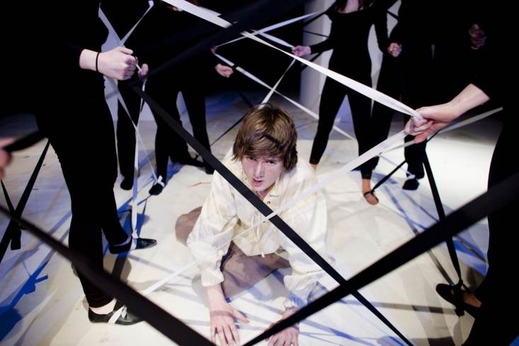
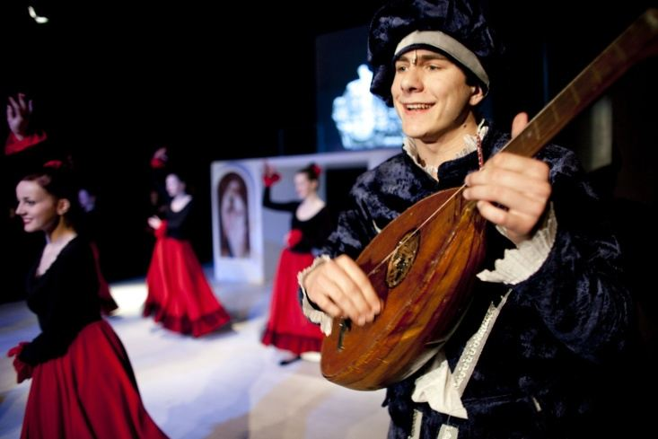
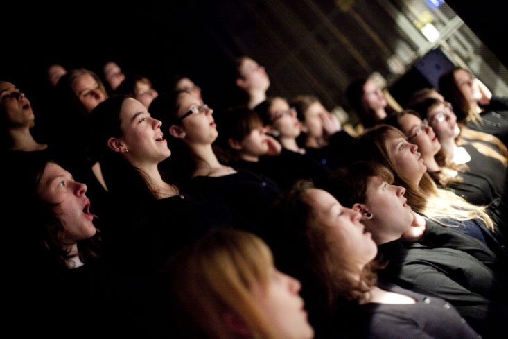
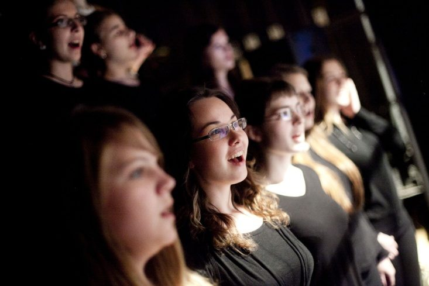
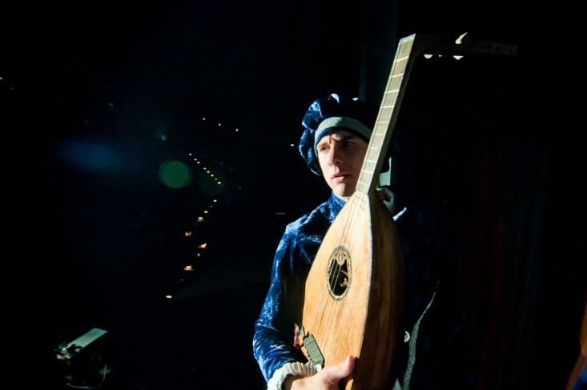
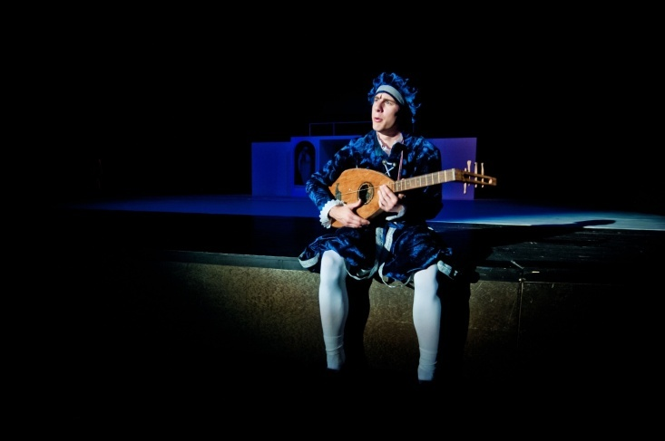
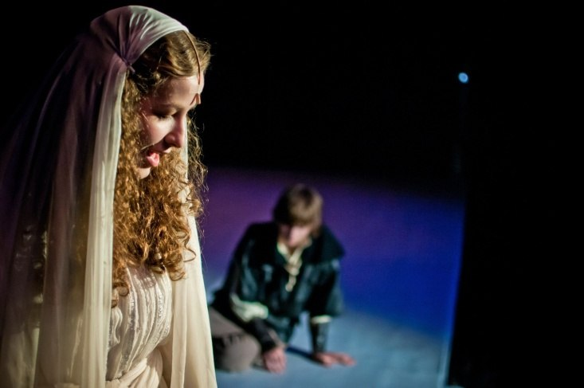

- Boží blázonautor: sr.Yvonne Baková, hudobné aranžmány: sr.Lýdia Mikloškováspieva: Juraj Vontorčík
- Granadaautor: p.Luis Caudt, hudobné aranžmány: sr.Lýdia Miklošková, Igor Baarspieva: Adam Predáč
- Odpusť námautor: sr.Yvonne Baková, hudobné aranžmány: sr.Lýdia Mikloškováspieva zbor
- Otčenášautor: sr.Yvonne Baková, hudobné aranžmány: sr.Lýdia Mikloškováspieva zbor
- Otčenáš z predstaveniaautor: sr.Yvonne Baková, hudobné aranžmány: sr.Lýdia Mikloškováspieva zbor
- Trubadúr - Aj keď slnkoautor: sr.Yvonne Baková, hudobné aranžmány: sr.Lýdia Mikloškováspieva: Adam Predáč
- Trubadúr - Juana čakalaautor: sr.Yvonne Baková, hudobné aranžmány: sr.Lýdia Mikloškováspieva: Adam Predáč
- Trubadúr - No životautor: sr.Yvonne Baková, hudobné aranžmány: sr.Lýdia Mikloškováspieva: Adam Predáč
- Trubadúr - Túlať saautor: sr.Yvonne Baková, hudobné aranžmány: sr.Lýdia Mikloškováspieva: Adam Predáč
- Záchranaautor: sr.Yvonne Baková, hudobné aranžmány: sr.Lýdia Mikloškováspieva: Daniela Matejovičová
- Záchrana s textomautor: sr.Yvonne Baková, hudobné aranžmány: sr.Lýdia Mikloškováspieva: Daniela Matejovičová